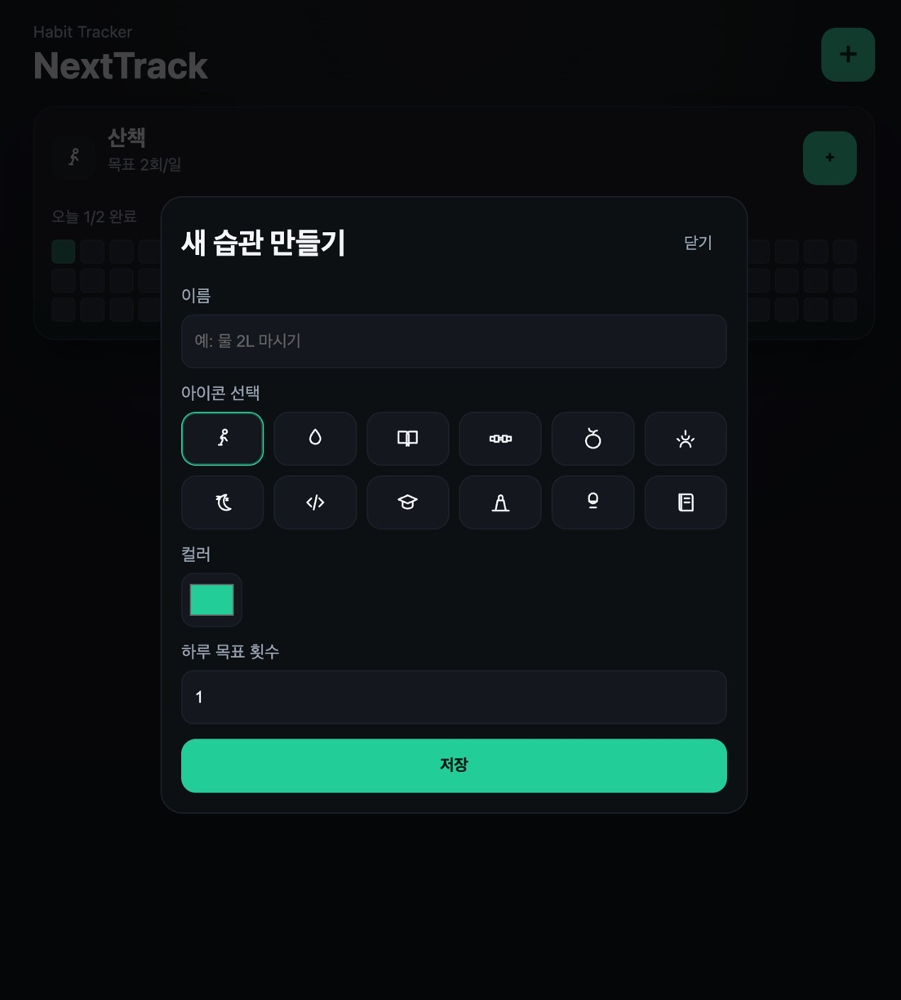

1. 빠른 습관 생성
이름, 아이콘, 색상만 선택하면 끝. 복잡한 설정 없이 바로 시작합니다.
대부분의 To-do 앱은 “해야 할 일”을 관리합니다. 하지만 NextTrack은 다릅니다.
당신의 행동 패턴을 관리합니다.
이름, 아이콘, 색상만 선택하면 끝. 복잡한 설정 없이 바로 시작합니다.
+ 버튼을 눌러 하루에 여러 번 습관을 쌓을 수 있습니다. 행동 즉시 기록됩니다.
최근 84일 기록, 채워지는 패턴, 성장 흐름을 눈으로 확인할 수 있습니다.
로그인 필요 없음, 서버 없음. 데이터는 브라우저에 안전하게 저장됩니다.

예시 UI: 습관 이름, 아이콘, 색상, 목표 횟수를 빠르게 설정하는 생성 화면
NextTrack은 믿습니다.
사람은 목표가 아니라, 반복으로 변한다.
그리고 그 반복은 아주 작은 행동에서 시작됩니다.
모든 것이 기록됩니다.
+ 버튼 클릭끝.
설치 없이 바로 사용할 수 있습니다.
NextTrack은 계속 진화합니다.